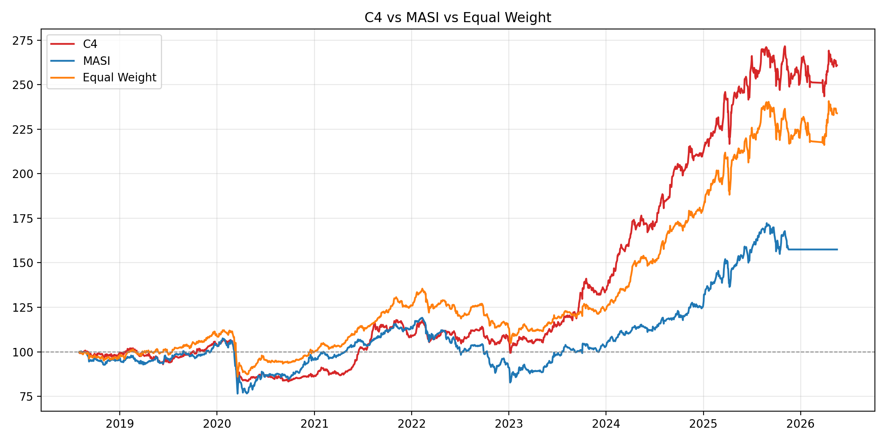
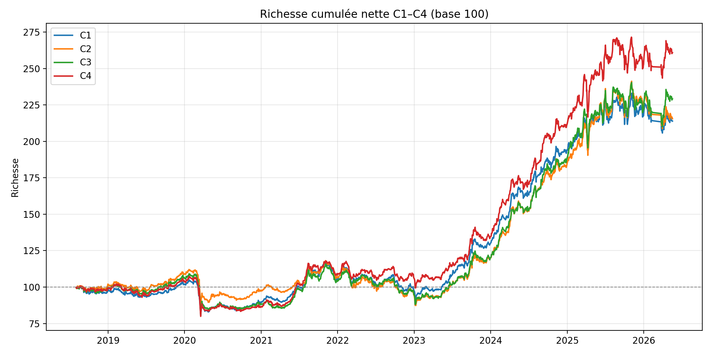
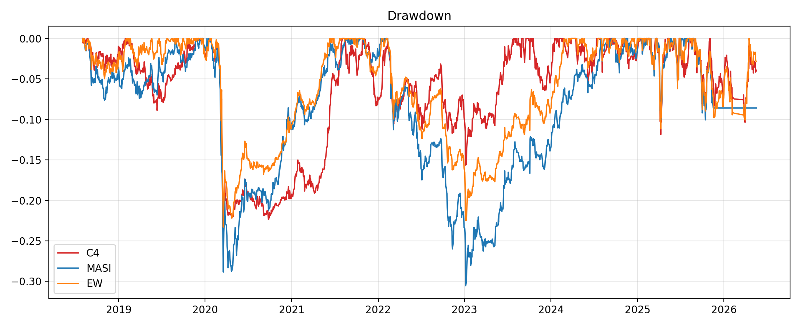

Livrable client · Confidentialité interne
Rapport complet de réalisation — Bourse de Casablanca (BVC / MASI)
Le projet livre un système de recommandation d'actions pour la Bourse de Casablanca. Il produit, chaque mois, une liste de titres avec une recommandation (Acheter / Neutre / Vendre), un portefeuille pondéré, et un historique de performance comparable au MASI et à un univers équipondéré.
Le pipeline comporte deux étages distincts. L'étage 1 estime un score de qualité (excès de rendement ajusté au risque par rapport au MASI), puis le traduit en recommandation. L'étage 2 construit un portefeuille long-only à partir des titres non vendus, en arbitrant trois objectifs : alpha attendu, risque de queue (CVaR) et liquidité.
Quatre configurations ont été comparées (Ridge vs hybride Ridge+Forêt aléatoire, avec ou sans régime). La configuration retenue pour la livraison est C3 — Hybrid, avec allocation NSGA-III à trois objectifs (alpha, CVaR, liquidité), sélection du point « genou » (distance à l'utopie) et poids maximal de 10 % par titre. La liquidité n'est pas un filtre d'éligibilité (aucun seuil VMQ ≥ 500 k MAD).
Période hors échantillon testable : décisions 2018-07 → 2025-06 (84 mois). Dernière détention close au 2025-07-31 (un mois, comme les autres périodes — pas jusqu'au dernier cours en base). Coût de transaction 0,3 % × turnover L1. MASI sur la même fenêtre : +7,69 % annualisé, Sharpe 0,66, richesse 167,2. Equal Weight (même univers BUY+NEUTRAL C3) : +12,36 % annualisé, Sharpe 1,162. C3 n'est pas au-dessus du MASI sur toute la trajectoire (creux 2020–2022). L'écart vs MASI n'est pas significatif à 5 % (t p = 0,48 ; Wilcoxon p = 0,28). Après correction du calendrier, C2 a un Sharpe légèrement supérieur (1,035 vs 0,994) ; C3 reste le modèle affiché (hybride). Sur 2023–2025, C3 atteint +38,3 % annualisé (Sharpe 2,65).
La Bourse de Casablanca est un marché frontière : liquidité hétérogène, historique plus court que les marchés développés, publication financière semestrielle, et friction de transaction non négligeable. Un système de recommandation ne peut donc pas se limiter à un classement de rendement brut : il doit intégrer le risque baissier, la liquidité et l'état du marché.
Données BVC → Features (fondamentales, techniques, marché) → Score α → Reco BUY/NEUTRAL/SELL → NSGA-III (α, CVaR, liquidité) → Portefeuille mensuel → Backtest net → Plateforme
Les données sont collectées depuis les tables de marché et de fondamentaux (entrepôt / Supabase), nettoyées, puis stockées en fichiers de travail reproductibles.
| Famille | Contenu | Rôle |
|---|---|---|
| Cours historiques | Prix, volumes, dates de séance par ticker | Features techniques, rendements réalisés, liquidité |
| Indices (MASI) | Niveau et rendements de l'indice | Benchmark, bêta, contexte de marché, régime |
| Fondamentaux | Comptes semestriels (CA, PNB, RNPG, capitaux propres, etc.) | Ratios de valorisation et de qualité |
| Constitution d'indices | Libellés, dates de cotation, nombre de titres | Univers, capitalisation, noms affichés |
Momentum (1, 3, 6, 12 mois), RSI, distances aux moyennes mobiles 20/50/200, volatilité 20 et 60 jours, volatilité baissière 20 jours, bêta MASI, volumes moyens quotidiens (VMQ 20j et 60j), turnover et indicateur de liquidité.
PE, PB, EV/EBITDA (hors financiers), ROE, marges, croissances YoY, gearing, score de Piotroski et score de santé. Jointure as-of sur la date de publication, jamais sur la date de clôture comptable.
Momentum 3 mois du MASI, dispersion des rendements, breadth (part de titres au-dessus de leur MA50), volatilité moyenne de l'univers. Calculés uniquement à partir des données BVC.
Les features continues sont ensuite normalisées en cross-section (z-scores par date, colonnes *_z),
afin de comparer les titres entre eux un jour donné plutôt que dans le temps.
Un HMM gaussien avait été testé puis abandonné : l'état « haussier » y était trop rare (~3–5 % des mois) pour conditionner un modèle. Il a été remplacé par une règle à seuils explicite à trois états (haussier, neutre, baissier).
Les cellules « avec régime » reçoivent trois indicatrices is_bull, is_neutral, is_bear
en plus des features z-scorées.
L'étage 1 compare de façon contrôlée l'hybridation (Ridge seul vs Ridge + Forêt aléatoire) et l'adaptation (avec ou sans features de régime). Quatre cellules, mêmes données, même cible.
| Cellule | Modèle | Régime | Rôle |
|---|---|---|---|
| C1 | Ridge | Non | Référence linéaire |
| C2 | Ridge | Oui | Effet régime seul |
| C3 | Ridge + RF (50 % / 50 %) | Non | Modèle livré |
| C4 | Ridge + RF (50 % / 50 %) | Oui | Hybridation + régime |
Régression Ridge (pénalisation L2, graine 42). Interprétable, robuste en petit échantillon. Features : ~33 colonnes z-scorées (36 avec régime).
Même cible et mêmes features. Hyperparamètres choisis sur validation (Rank-IC Spearman), sans retuning sur le test. Combinaison hybride : moyenne des scores Ridge et RF après z-score cross-sectionnel du jour.
Un split train ≤ 2020 / validation 2021–2022 / test ≥ 2023 a servi de premier diagnostic. Il a révélé un déséquilibre de régimes : le test ne contenait quasiment pas de mois baissiers (environ 3 %), contre 25 % en validation. Toute conclusion sur l'adaptation au régime était donc fragile. D'où l'étape suivante.
Le split fixe a été remplacé par une validation walk-forward à fenêtre glissante sur 2015–2025, afin de tester le scoring sur plusieurs régimes successifs.
| Paramètre | Choix |
|---|---|
| Fenêtre d'apprentissage | 36 mois glissants (taille constante, non expansive) |
| Fenêtre de test | 6 mois immédiatement après le train |
| Pas | 1 mois (plis descriptifs chevauchants) |
| Blocs d'allocation | Blocs de 6 mois non chevauchants (indépendance pour tests statistiques) |
| Embargo | Aucun entre train et test ; la cible à 63 jours est calculée sans utiliser de cours postérieurs à la date de feature |
Les scores hors échantillon de ces blocs alimentent ensuite la règle de recommandation et l'allocation, sans réutiliser les performances du test pour choisir les hyperparamètres.
Le classement « top 25 » initial a été abandonné pour le livrable : il ne parlait pas le langage de l'investisseur et forçait une cardinalité artificielle. La règle opérationnelle couvre l'univers complet.
Les titres SELL sont exclus du portefeuille. Les BUY conservent leur alpha intégral. Les NEUTRAL voient leur score d'optimisation multiplié par 0,5 (conviction réduite, pas d'exclusion).
Sur la fenêtre livrée : recommandations C1–C4, 84 mois (2018-07 → 2025-06), univers complet BUY/NEUTRAL/SELL. Portefeuille livré = C3.
Chaque mois, un algorithme évolutionnaire NSGA-III cherche un ensemble de portefeuilles non dominés (front de Pareto), puis un unique portefeuille est retenu.
| Élément | Spécification retenue (Variante A) |
|---|---|
| Univers | Tous les titres du mois sauf SELL (pas de filtre VMQ ≥ 500 k) |
| Objectifs | Maximiser l'alpha de portefeuille ; minimiser le CVaR 95 % ; maximiser L = sigmoid(VMQ 20j) |
| Contraintes | Somme des poids = 100 % ; long-only ; poids max 10 % ; sparse (poids min 0 %) |
| CVaR | Estimé sur l'historique de rendements journaliers ≤ date de décision (~2 ans) |
| Population / générations | 36 / 30 (aligné walk-forward) |
| Sélection finale | Point genou (distance à l'utopie) = portefeuille d'équilibre |
| Mode liquidité | Principe | Décision |
|---|---|---|
| Éligibilité | Filtre VMQ ≥ 500 000 MAD puis NSGA à 2 objectifs (α, CVaR) | Protocole antérieur, non retenu pour le livrable |
| Pareto (Variante A) | Pas de filtre dur ; la liquidité est un 3e objectif | Retenu |
| Aucune | Ni filtre ni objectif de liquidité | Contrôle méthodologique uniquement |
Le filtre dur écartait des titres encore négociables et ne laissait pas l'optimiseur arbitrer liquidité contre alpha. La Variante A internalise cet arbitrage.
Sous le protocole figé (NSGA-III 3 objectifs, Knee, w_i ≤ 10 %, SELL exclus, pas de filtre VMQ), une fois la dernière période bornée à un mois (2025-07-31), C2 a le meilleur Sharpe (1,035) et C3 Hybrid le même ordre de rendement (11,25 % vs 11,26 %). C3 reste le modèle affiché sur la plateforme (hybride). C4 n'améliore pas C3. Les écarts C3 vs C1 / C2 / C4 / MASI ne sont pas significatifs à 5 %. La courbe de richesse C3 passe sous le MASI sur une longue partie de 2020–2022 ; le rattrapage est concentré en 2023–2025.
| Cellule | Rend. ann. | Sharpe | Max DD | L | Positions moy. | Richesse 100 |
|---|---|---|---|---|---|---|
| C1 Ridge | 10,09 % | 0,948 | −22,2 % | 0,711 | 39,7 | 188,6 |
| C2 Ridge + régime | 11,26 % | 1,035 | −22,6 % | 0,703 | 38,7 | 202,3 |
| C3 Hybrid | 11,25 % | 0,994 | −24,2 % | 0,712 | 31,6 | 202,1 |
| C4 Hybrid + régime | 9,43 % | 0,844 | −24,3 % | 0,713 | 31,5 | 181,3 |
Portefeuilles Knee figés, SELL exclus, pas de filtre VMQ ≥ 500 k, w_i ≤ 10 %. Front de Pareto complet conservé. Concentration : poids max réalisé = 10 % ; Top 3 ≈ 29 % ; Top 5 ≈ 46 % (C3).
| Comparaison | Écart mensuel moyen | Mois de surperformance | p (Student) | p (Wilcoxon) | Significatif à 5 % (les deux tests) |
|---|---|---|---|---|---|
| C3 − MASI | +0,21 pp | 59,5 % | 0,476 | 0,279 | Non |
| C3 − Equal Weight C3 | −0,07 pp | 53,6 % | 0,599 | 0,982 | Non |
| C3 − C1 / C2 / C4 | 0,00 à +0,13 pp | 45–50 % | > 0,18 | > 0,36 | Non |
L'avantage économique vs MASI est de l'ordre de +3,6 pp annualisés, sans conclusion statistique à 5 %. Vs l'équipondéré du même univers C3, NSGA n'apporte pas de gain significatif (Sharpe EW 1,162 vs C3 0,994). C3 ne « superforme » pas le MASI au sens d'une trajectoire toujours au-dessus : 2020–2022 est négatif (Sharpe −0,32).
| Période | n mois | Rend. ann. | Sharpe | Max DD | L |
|---|---|---|---|---|---|
| 2010–2014 | 0 | Impossible (pas de Stage 1) | |||
| 2015–2019 (dès 2018-07) | 18 | 4,84 % | 0,66 | −6,4 % | 0,58 |
| 2020–2022 | 36 | −4,35 % | −0,32 | −23,8 % | 0,70 |
| 2023–2025 | 30 | 38,29 % | 2,65 | −11,1 % | 0,81 |
Une application web (Streamlit) présente les artefacts figés, sans recalcul des modèles. Titre affiché : Système de recommandation d'actions.
| Fonction | Ce que voit l'investisseur |
|---|---|
| Calendrier | Sélection du mois de décision (2018-07 à 2025-06, 84 mois, pas 2023). Onglet marché : MASI dès 2010 |
| Recommandations | Liste complète des titres, nom, BUY/NEUTRAL/SELL, alpha, régime, liquidité, VMQ, présence au portefeuille, poids |
| Portefeuille | Composition pondérée, alpha, CVaR, L, turnover, rendement brut/net du mois |
| Historique | Série mensuelle des rendements et de la richesse |
| Performance | Courbes C3 vs MASI vs Equal Weight, C1–C4, drawdowns, KPIs, tests, sous-périodes |
Lancement local : py -3 -m streamlit run experiments/factorial_hybrid_adapt/web/app_c4.py
— URL : http://localhost:8501.
| Indicateur (net de frais) | C3 | MASI | Equal Weight |
|---|---|---|---|
| Rendement annualisé | 11,25 % | 7,69 % | 12,36 % |
| Volatilité annualisée | 11,39 % | 12,38 % | 10,51 % |
| Sharpe | 0,994 | 0,661 | 1,162 |
| Sortino | 1,511 | 0,979 | 1,733 |
| CVaR 95 % | 1,65 % | 1,88 % | 1,57 % |
| Max drawdown | −24,17 % | −30,54 % | −22,62 % |
| Durée max. de drawdown | 548 j | 626 j | 518 j |
| Mois positifs | 61,9 % | 56,0 % | 70,2 % |
| Richesse finale (base 100) | 202,1 | 167,2 | 215,9 |
| Turnover L1 moyen | 0,99 | — | 0,54 |
| Liquidité L moyenne | 0,71 | — | 0,63 |
Rendement cumulé net : +102 %. L'écart vs MASI est économique (+3,6 pp annualisés) sans conclusion statistique à 5 %. La lecture « C3 superforme le MASI sur 2018–2025 » est trop forte : C3 termine plus haut, mais passe sous l'indice pendant 2020–2022, et Equal Weight termine encore plus haut.



platform_mart et application web.| Contenu | Emplacement |
|---|---|
| Portefeuilles C4 figés (FINAL) | experiments/factorial_hybrid_adapt/outputs/final_experiment_2010_2025/04_final_portfolios/ |
| Backtest net C1–C4 | .../outputs/final_experiment_2010_2025/05_backtest/ |
| Validation vs benchmarks | .../outputs/final_experiment_2010_2025/06_benchmarks/ et 07_statistical_validation/ |
| Données de la plateforme | .../outputs/platform_mart/ |
| Application | experiments/factorial_hybrid_adapt/web/app_c4.py |
| Rapport expérimental | .../outputs/final_experiment_2010_2025/10_reports/Rapport_final_experimental.html |
| Paramètre | Valeur |
|---|---|
| Graine aléatoire | 42 |
| Horizon de la cible | 63 séances |
| Indicateurs à partir de | 3 juin 2015 |
| Publication S1 / S2 | septembre N / avril N+1 |
| Pondération hybride | Ridge 50 % + RF 50 % |
| τ (reco) | quantile 33 % des |préd.| passées, expanding |
| Préférences allocation | BUY ×1,0 ; NEUTRAL ×0,5 ; SELL exclus |
| Poids max / min | 10 % / 0 % |
| NSGA-III | population 36, 30 générations |
| Lookback CVaR | 504 séances |
| Coût de transaction | 0,30 % |
| Fenêtre livrable (demandée) | 2010-01 → 2025-06 |
| Fenêtre testable (OOS) | 2018-07 → 2025-06 (84 mois) |
| Filtre VMQ ≥ 500 k | Non (liquidité = objectif Pareto uniquement) |
| TFT | Non utilisé dans le système livré |